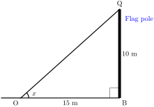
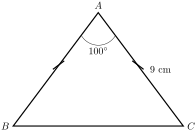
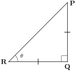

\(\textbf{Understand and Use Trigonometric Ratios}\) - Define and apply sine, cosine, and tangent to solve right-angled triangle problems.
\(\textbf{Apply the Pythagorean Theorem}\) - Use the theorem to determine unknown sides in right-angled triangles.
\(\textbf{Solve for Unknown Angles and Sides}\) - Use trigonometric ratios and special angle values (\(30^\circ,\, 45^\circ,\, 60^\circ\)) to find missing angles or sides.
\(\textbf{Apply Trigonometry in Real-World Problems }\) - Solve practical problems such as determining the height of a building, the angle of elevation, or distances indirectly.
Definition2.4.1.
Trigonometry is a branch of mathematics that studies the relationships between the angles and sides of triangles. It is primarily concerned with right-angled triangles and uses trigonometric functions such as \(\sin\) (sine), \(\cos\) (cosine), and \(\tan\) (tangent) to describe these relationships.
Right-angled triangles can be found in various real-life structures and objects. Some examples include:
Staircases
Roof structures
Ladders against a wall
Bridges and ramps
Tree shadows
Subsection2.4.1Trigonometric ratios of acute angles
An acute angle is an angle that measures greater than 0° but less than 90°. In other words, it is an angle that is smaller than a right angle (90°).
Examples of Acute Angles
30°, 45°, and 60° are common acute angles in trigonometry.
Characteristics of Acute Angles
They are always found in right-angled triangles.
The sum of two acute angles in a right-angled triangle is always 90° because the third angle is the right angle (90°).
They appear in various geometric shapes like triangles, polygons, and real-world structures.
Subsubsection2.4.1.1Tangent of an Acute Angle
The inclination of the observer’s line of sight to the top of a \(10\,m\) high flag pole, positioned \(15\,m\) away, can be determined using a scale drawing, as illustrated in the diagram below, the inclination (angle of elevation) is represented by the angle \(x\text{.}\)

Figure2.4.2.
Activity2.4.1.
\(\textbf{Work in pairs}\)
What you require: A piece of paper, a ruler and a pencil.
Using a piece of paper, a ruler and a pencil, draw the diagram like the one shown below.
Figure2.4.3.fig 1.2
Measure the length \(OB,\,BQ,\,OC,\,CR,\,OA,\,AP\) .
Show whether the triangle \(OPA,\,OQB,\,ORC\text{.}\) If they are similar,what do you notice about the ratios of there sides?
Find the ratios of \(\frac{PA}{OA},\,\frac{QB}{OB}\,\frac{RC}{OC}\)
What do you notice about the ratios of the above figure.
For the parallel lines of \(BQ\) that is \(AP\) and \(RC\text{,}\) What do you notice about the ratio of vertical distance and the horizontal distance?
Measure the angle represented by \(x^\circ\)
Discuss your findings with other learners in your class.
Essential Concept:
You will notice that when given the triangle below,
Figure2.4.4.
Triangle \(OPA,\,OQB,\,\textbf{and }\, ORC\) are similar.
For any line parallel to \(BQ\text{,}\) ratio of \(\frac{\text{Vertical distance}}{\text{Horizontal distance}}\) will be the same in each triangle above that is \(1.5\text{.}\)
This constant ratio, \(\frac{\text{Vertical distance}}{\text{Horizontal distance}}\) is called the \(\textbf{tangent of angle} \, VOT\text{.}\)
Therefore, tangent of \(x^\circ=1.5\) which can be written as \(\text{tan}\,x^\circ=1.5\text{.}\)
The tangent of an angle depends on the size of the angle only.
The figure below shows a right-angled triangle \(ABC\text{,}\) in which
The first thing you should do is to calculate the perpendicular height of the Triangle then identify the opposite and the adjacent sides of angle \(\theta\) and angle \(\alpha\text{.}\) Finaly find there tangents.
The table of tangents is a mathematical reference table that provides values of the tangent function (\(tan\)) for various angles, typically in degrees or radians. It helps in solving trigonometry problems when a calculator is not available. Here’s how you can use it:
Special tables have been prepared and can be used to obtain tangents of acute angle (see tables of natural tangents in your mathematical tables). The technique of reading tables of tangents is similar to that of reading tables of logarithms or square roots.
Here’s how you can use it:
Identify the angle
Find the given angle in the leftmost column (if degrees) or the top row (if radians).
Locate the Tangent Value
Read across the row (or down the column) to find the corresponding tangent value.
Note
In the tables of tangents, the angles are expressed in decimals and degrees or in degrees and minutes.
One degree is equal to \(60^′ \, (60\,
\text{minutes})\) . Thus, \(30^′ = 0.50^\circ, \,54^′ =
0.9^\circ\, \text{and} \,6^′= 0.1^\circ.\text{.}\)
From the table, the values of tangents increase as the angles approach \(90^\circ\)
Activity2.4.2.
\(\textbf{Work in groups}\)
What you require: Printed Table of Tangent, a \(30\,cm\) ruler, pencil, and calculator (for verification).
What is the tangent of an angle?
How do we use a Table of Tangents?
Use your Table of Tangent to find the folowing tangents.
\(\displaystyle 42^\circ\)
\(\displaystyle 35^\circ\)
\(\displaystyle 90^\circ\)
\(\displaystyle 42^\circ \, 47^′\)
Discuss your findings with other groups in your class.
Example2.4.9.
Find the tangent of each of the following angles from the table:
Note that \(1.3333\) cannot be read directly from the tables of tangents. Therefore, look for a number nearest to \(1.3333\) from the tables. In this case, the nearest number is \(1.3319\) The angle whose tangent is \(1.3319\) is \(53.1^\circ\)
The difference between \(1.3333\) and \(1.3319\) is \(14.\text{.}\) From the difference column in the tangent tables, the nearest number to \(14.\) is \(9\) which gives a difference of \(0.44\text{.}\)
Adding \(0.44\) to \(53.1^\circ\) we get \(53.54^\circ\text{.}\)
Therefore, the angle whose tangent is \(1.3333\)\(=53.54^\circ\)
Thus, \(\alpha=53.54^\circ\text{.}\)
\(\textbf{Exersice}\)
Read from tables the tangent of:
\(\displaystyle 88^\circ\,46^′\)
\(\displaystyle 60^\circ\,46^′\)
\(\displaystyle 45^\circ\)
Express each of the following in degrees and minutes:
\(\displaystyle 26.75^\circ\)
\(\displaystyle 40\frac{1}{2}^\circ\)
\(\displaystyle 56\frac{1}{4}^\circ\)
A ladder leans against a wall so that its foot is \(4.5 \,m\) away from the foot of the wall and its top is \(10\,\) up the wall. Calculate the angle it makes with the ground .
In a right-angled triangle, the shorter sides are \(6.5\, cm\) and \(12.2 \,cm\) long. Find the sizes of its acute angles.
Subsubsection2.4.1.2Sine and Cosine of an Acute Angle
Activity2.4.3.
\(\textbf{Work in groups}\)
Material needed; A piece of paper, a ruler and a pencil.
The figure below shows \(AP,\,BQ, \textbf{and}\,CR\) perpendicular to \(OV \text{and } \, \angle \, TOV=\theta \)
What do you notice about the ratios of roman (i...iii).
Fill also the following;
\(\frac{OA}{OP}=\)____
\(\frac{OB}{OQ}=\)____
\(\frac{OC}{OR}=\)____
What do you notice about these ratios (5) above.
Discuss your findings with other groups in your class.
Essential Concept:
You will notice that,
The ratios of (3) are the same that is,
\(\frac{AP}{OP}=\frac{BQ}{OQ}=\frac{CR}{OR}\)
This constant value is obtained by taking the ratio of the side opposite to the angle \(\theta \) to the hypotenuse side in each case. This ratio is called the sine of angle \(\theta \text{,}\)Which can be whritten as as \(sin \, \theta\text{.}\)
The ratios of (5) are the same that is,
\(\frac{OA}{OP}=\frac{OB}{OQ}=\frac{OC}{OR}\)
This constant value is obtained by taking the ratio of the side adjacent to the angle \(\theta \) to the hypotenuse side in each case. This ratio is called the cosine of angle \(\theta \text{,}\)Which can be whritten as as \(cos \, \theta\text{.}\)
In general, given a right-angled triangle whith \(\textbf{opposite side, adjacent side}\) and \(\textbf{hypotenuse side}\) as shown,
A flagpole \(12\) meters tall casts a shadow of \(8\) meters on the ground.
What is the angle of elevation of the sun?
If the shadow increases to \(10\) meters, what will be the new angle of elevation?
An airplane takes off at an angle of \(18^\circ\) to the ground. After flying \(500\) meters,
How high is the airplane above the ground?
How far has it traveled horizontally from the starting point?
A ladder \(5\) meters long leans against a vertical wall, making an angle of \(65^\circ\) with the ground as shown.
How high does the ladder reach on the wall?
How far is the base of the ladder from the wall?
\({\color{blue} \textbf{Tables of Sines and Cosines}}\)
The sine and cosine tables are read and used in the same way as the tangent tables was used earlier before.As the angles increase from \(0^\circ\) to \(90^\circ\text{:}\)
When you look at the tables of Cosine and sine, you will notice that,
The values of their sines increase from \(0\) to \(1\text{.}\)
The values of their cosines decrease from \(1\) to \(0\)
Therefore, the values in the difference column of cosine tables have to be subtracted and those in the difference columns of the sine tables have to be added.
Generally, the values of sine and cosine ranges from \(0\) to \(1\)(\(0\leq \theta \leq 1\)).
Activity2.4.4.
\(\text{Work in groups}\)
What you require: A scientific calculator{for verification.}, Ruler and pencil,A printed table of sine and cosine values (or a reference sheet)
Complete the Trigonometric Table
Fill in the missing values in the table below. Use a calculator to check your answers if needed.
Angle(\({\color{blue}^\circ}\))
\({\color{blue} sin\,\theta}\)
\({\color{blue} cos\,\theta}\)
\({\color{blue} sin(90^\circ-\theta)}\)
\({\color{blue}cos(90^\circ-\theta)}\)
\(0^\circ\)
\(0.0000\)
\(1.0000\)
\(30^\circ\)
\(0.5000\)
\(1.0000\)
\(45^\circ\)
\(60^\circ\)
\(45^\circ\)
\(1.0000\)
\(0.0000\)
Analyze the following.
Compare \(sin\,\theta\) with \(cos(90^\circ-\theta)\text{.}\) What do you notice?
Compare \(sin\,\theta\) with s\(cos(90^\circ-\theta)\text{.}\) What pattern do you see?
Discuss your work with other groups in class.
Example2.4.16.
Read the sine and cosine values of the following angles from the tables.
Repeat the procedure with a different right triangle.
How are \(sin,\, cos,\, tan \)v related?
Discuss your work with other learners.
\(\textbf{Exercises}\)
Find from tables the angle whose sine and cosine is:
\(\displaystyle 0.4467\)
\(\displaystyle 0.5875\)
\(\displaystyle 0.0004\)
Read from the tables the sine and the cosine of:
\(\displaystyle 45.46^\circ\)
\(\displaystyle 52^\circ\, 9^′\)
\(\displaystyle 25^\circ\, 45^′\)
The figure below shows an isosceles triangle in which \(AB = AC = 9\, cm\text{.}\) Angle \(BAC\) is \(100^\circ\text{.}\) Calculate the length of BC.

Subsection2.4.2Sines and Cosines of Complimentary angles
Definition2.4.19.
\(\textbf{Complementary}\) angles are two angles whose sum is \(90^\circ\) (or \(\frac{\pi}{2}\)radians). The sine and cosine functions of complementary angles have a special relationship:
\begin{align*}
sin(90^\circ-\theta)=\amp cos \, \theta \\
cos(90^\circ-\theta)=\amp sin\, \theta
\end{align*}
Explanetion
For any angle \(\theta\text{:}\)
The sine of an angle is equal to the cosine of its complement.
The sine of an angle is equal to the cosine of its complement.
Subsection2.4.3Trigonometric ratios of special angles((30°, 45° and 60°))
Trigonometry helps us understand the relationship between the angles and sides of a right-angled triangle. Some angles are special because their trigonometric values are easy to remember and frequently used in math and science. These special angles are \(30^\circ,\, 45^\circ, \,\text{and}\, 60^\circ\text{.}\)
As discussed before, The trigonometric ratios still holds as,
The trigonometrical ratios of \(30^\circ,\, 45^\circ, \,\text{and}\, 60^\circ\) can be deduced by the use of an isosceles right-angled triangle and an equilateral triangle as follows.
\(\textbf{Note:}\)
Isosceles trangle are trianglse whose 2 sides and the base angles are equal.
Equilateral triangle are triangle whose sides and angles are equal.
Subsubsection2.4.3.1Tangent, Cosine and Sine of 45°
In this section we use isosceles rigth-angle triangle to explore on how to find Tangent, Cosine and Sine of \(45^\circ\)
Activity2.4.7.
\(\textbf{Work in groups}\)
What you require: A rular, a piece of paper and a protractor.
Draw the isosceles rigth-angle triangle triangle like the one bellow,(ensure that two sides are equal)

Measure the angle that substend the Hypotenues and the adjacent that is \(\theta\text{.}\)
Measure the length \(PQ \, \text{and}\, QR\)
What do you notice about \(PQ \, \text{and}\, QR\)
Find the following trigonometrc ratios:
\(\displaystyle tan \, \theta\)
\(\displaystyle cos \, \theta\)
\(\displaystyle sin \, \theta\)
Compare the value of \(cos \, \theta \, \text{and} \,sin \, \theta \text{,}\) How do they relate?
\(\textbf{Essential concepts}\)
Look at the figure below;
Notice that; For an isosceles rigth-angle triangle, the two sides and the base angles are equal.
It implies that, For the special angle of \(45^\circ\text{,}\) To find the tangent,cosine and sine , Find first the length \(PR\)
The angle at the vertex of a cone is \(90^\circ\text{.}\) If the slant height is \(3\sqrt{2\,cm}\text{.}\) Find without using tables:
The diameter of the cone
The height of the cone.
Solution.
Since the vertex angle is \(90^\circ\text{,}\) the cone can be thought of as half of a right circular cone, meaning that the base of the cone forms the hypotenuse of a right-angled triangle.
Let:
\(r\)be the radius of the base,
\(h\) be the height of the cone,
\(l=3\sqrt{2\,cm}\) be the slant height (hypotenuse of the right-angled triangle).
Since the triangle formed is a right-angled isosceles triangle (because of the \(90^\circ\) vertex angle), we can say:
\(r=h\)
Since the right-angled triangle has radius \(r\) and height \(h\text{,}\) we use:
The angle made by the arms of an upright pair of dividers and the horizontal is \(45^\circ\text{.}\) The vertical distance from the horizontal to the vertex is \(15\,cm\text{.}\) Find without using tables:
The horizontal distance between the tips of the arms.
The length of the arms.
Subsection2.4.4Determining Trigonometric Ratios Using a Calculator
Trigonometric ratios sine(\(sin\)), cosine(\(cos\)), and tangent(\(tan\)) are used to relate the angles and sides of a right-angled triangle. When given an acute angle, a calculator can be used to determine these ratios accurately.
\(\textbf{How to determine trigonometric ratios using a calculator}\text{.}\)
Ensure the calculator is in degree mode.
Press the "MODE" button and select "DEG" (if using a scientific calculator).
Enter the angle value.
For example, to find \(sin\,30^\circ\text{,}\) type:
Press sin\(\to\) Press 30\(\to\) Press =
The calculator should display \(0.5\) or some calculator will display \(\frac{1}{2}\text{.}\)
Repeat for cosine and tangent.
\(cos\,30^\circ\)
Press cos\(\to\) Press 30\(\to\) Press =
The calculator should display \(0.8660...\) or some calculator will display \(\frac{\sqrt{3}}{2}\text{.}\)
\(tan\,30^\circ\)
Press tan\(\to\) Press 30\(\to\) Press =
The calculator should display \(0.57735...\) or some calculator will display \(\frac{1}{\sqrt{3}}\text{.}\)
These values correspond to the exact values found using the unit circle or a right-angled triangle.
For any acute angle the calculator can be used to find the corresponding values of the trigonometry.
Activity2.4.9.
\(\textbf{Work in pairs}\)
What you require:
Scientific calculators or any other calculator having \(sin\text{,}\)\(cos\) and \(tan\) battons.
Protractor and ruler (for optional verification with a drawn triangle).
Worksheet with a table.
Complete the Table below.
Use a calculator to find the sine, cosine, and tangent of the given angles, and fill in the table.
Angle (\(^\circ\))
\({\color{blue} sin}\)
\({\color{blue} cos}\)
\({\color{blue} tan}\)
\(0^\circ\)
\(25^\circ\)
\(30^\circ\)
\(45^\circ\)
\(60^\circ\)
\(75^\circ\)
\(90^\circ\)
Observe and answer:
What happens to \(sin\) as the angle increases
How does \(cos\) behave as the angle increases?
Why is \(tan\,90^\circ\) displays syntax error?
Example2.4.25.
Use calculator to find the following;(write your answer to \(\textbf{4 decimal places}\)).
Subsection2.4.5Application of trigonometric ratios
Trigonometric ratios are used to find unknown angles or side lengths in right-angled triangles. These ratios have various real-life applications in different fields, helping solve problems related to measurement, navigation, and engineering.
Trigonometry plays a crucial role in various careers and everyday problem-solving.
In this section you will learn how trigonometry are used in real life situation and many more.
Subsubsection2.4.5.1Trigonometric ratios to angles of Elevation and Depression
Trigonometry helps us calculate distances and heights using angles of elevation and depression in real-life situations.
See the figure below;
The dashed line is the horizontal line.
\(\textbf{Angle of Elevation:}\) The angle measured upward from a horizontal line to an object above.
\(\textbf{Angle of Depression:}\) The angle measured downward from a horizontal line to an object below.
Angle of elevation and angle of depression are complimentary angle meaning sum of the two angles add up to \(90^\circ\text{.}\)
Both angles are measured from an observer’s line of sight and are solved using trigonometric ratios \(sin,\,cos,\,\text{and}\,tan\)
The angle of elevation and angle of dipression can be measured using a simple clinometer.
\(\textbf{Steps to Use a Simple Clinometer to measure angles of elevation and depression}\)
A clinometer (or inclinometer) is a tool used to measure the angle of elevation (looking up) and the angle of depression (looking down). Follow these steps to measure angles accurately.
\(\textbf{Measure the Angle of Elevation:}\)
(Used when looking up at an object, e.g., the top of a building or tree.)
Stand at a known distance from the object you want to measure.
Hold the clinometer at eye level and look at the top of the object through the sight or thread
Read the angle displayed on the clinometer.
Record the angle as the angle of elevation.
Use trigonometry (\(tan θ = \frac{\text{opposite}}{\text{adjacent}}\) to calculate the object’s height if necessary.
Example2.4.28.
If the angle of elevation is \(30^\circ\) and the distance to the object is \(50\,m\text{,}\) then the height (\(h\)) above eye level is:
Solution.
\(h=50\,m \times tan(30^\circ)\)
\(h=50 \times 0.577=28.85\,m\)
\(\textbf{Steps to Measure the Angle of Depression:}\)
(Used when looking down at an object, e.g., from a balcony to the ground.)
Stand at a higher position (e.g., a balcony, hill, or raised surface).
Hold the clinometer at eye level and look downward toward the object.
Read the angle shown on the clinometer when pointing at the object.
Record the angle as the angle of depression.
Use trigonometry to calculate distances if needed (\(tan θ = \frac{opposite}{adjacent}\)).
Example2.4.29.
If the angle of depression is \(40^\circ\) and the horizontal distance to the object is \(20\,m\text{,}\) the vertical drop (\(h\)) is:
Solution.
\(h=20\,m \times tan(40^\circ)\)
\(h= 20 \times 0.839=16.78\,m\)
Activity2.4.10.
\(\textbf{Work in groups}\)
What you require:
Measuring tape or meter stick.
Clinometer (string with weight / rock attached) .
Protractor or paper tube.
Calculator (or table of trigonometric ratios).
Paper and pencil.
Find a Tall ObjeSelect a tall object outdoors (tree, building, flagpole).
Measure the distance from the base of the object to your position. Record this distance.
Use your clinometer to measure the angle of elevation from your eye level to the top of the object. Record the angle.
Draw a right triangle representing the situation. Label the distance you measured, the angle of elevation, and the unknown height of the object.
Decide which trigonometric ratio (sine, cosine, or tangent) you need to use to find the height.
Use the appropriate trigonometric ratio and the measured distance and angle to calculate the height of the object. Show your work
Write down your calculated height. Compare your result with your partner’s or other groups’ results. Discuss any differences.
NO
Object Observed (e.g tree)
Distance from Base (meters)
Angle of Elevation (degrees)
Calculation (Show Work)
Calculated Height (meters)
\(1\)
2
\(3\)
\(\textbf{Futher activity}\)
Do an activity of finding Angle of Depression using a simple Clinometer you have made.
Example2.4.30.
A person stands \(20\,m\) away from a tree. The angle of elevation from their eyes is (\(1.6m\) above the ground) to the top of the tree is \(^\circ\)>. Find the height of the tree.
A lighthouse is \(50\,m \) tall. A sailor spots the top of the lighthouse at an angle of elevation of \(^\circ\text{.}\) How far is the ship from the base of the lighthouse?
A hiker at the top of a \(120\,cm\) hill looks down at a cabin in a valley. The angle of depression is \(40^\circ\text{.}\) Find the horizontal distance to the cabin.
A ladder is leaning against a wall, forming an angle of \(60^\circ\) with the ground. If the ladder is \(10\,\) meters long, how high does it reach on the wall? Draw a right-angled triangle to represent the situation
A drone flies to a height of \(80\) meters above the ground. The angle of depression from the drone to a person standing on the ground is \(30^\circ\text{.}\) Find the horizontal distance between the person and the drone’s projection on the ground. Sketch the problem.
A surveyor is standing \(50\) meters away from the base of a mountain. The angle of elevation to the peak of the mountain is \(30^\circ\text{.}\) Calculate the height of the mountain above the surveyor’s eye level.
Technology2.4.33.
Use the following links to explore on trigonometric ratios.